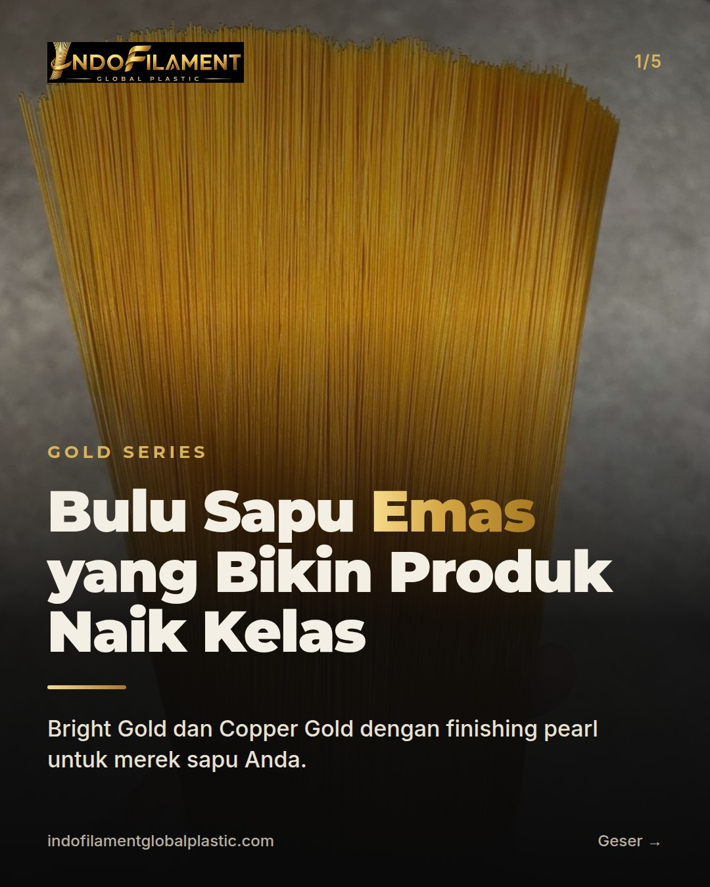
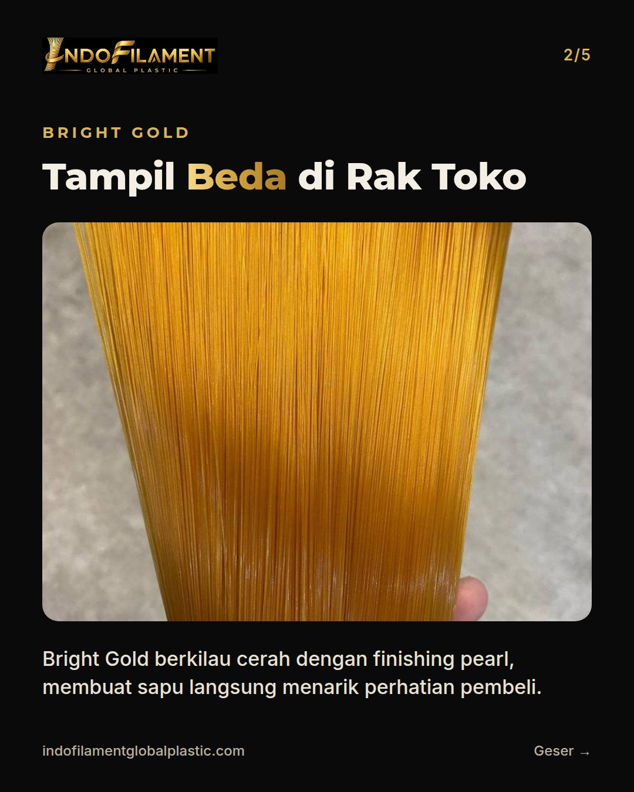
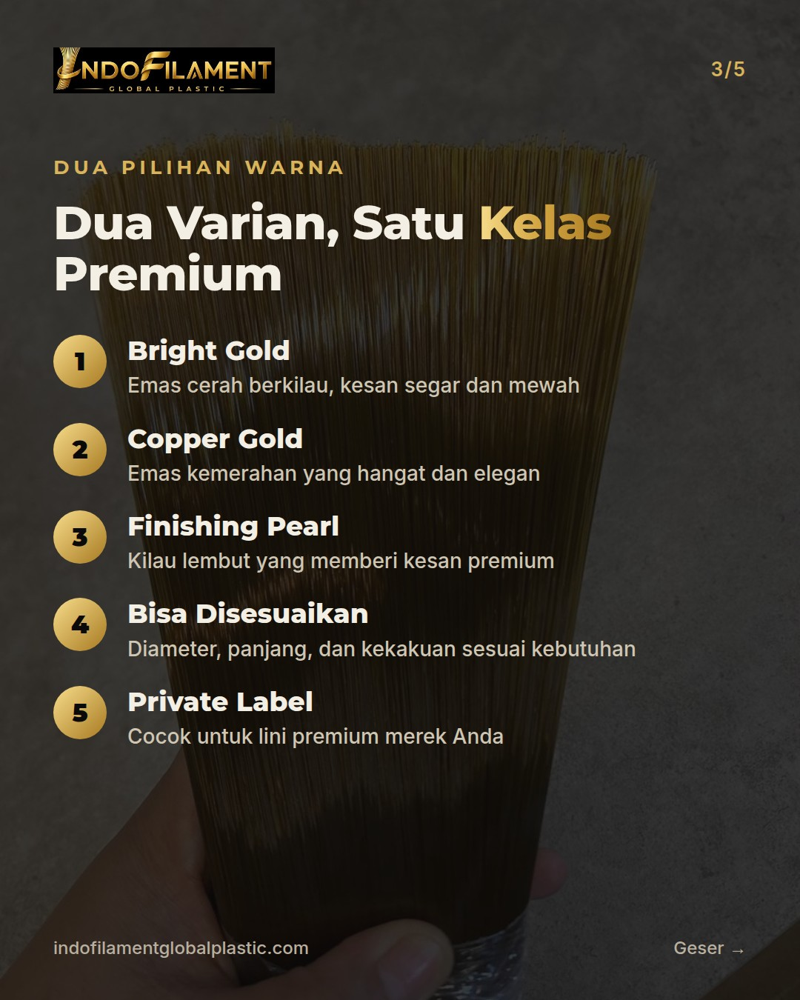
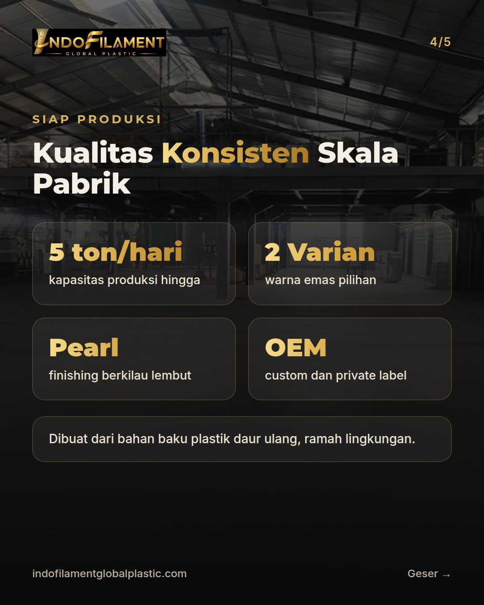
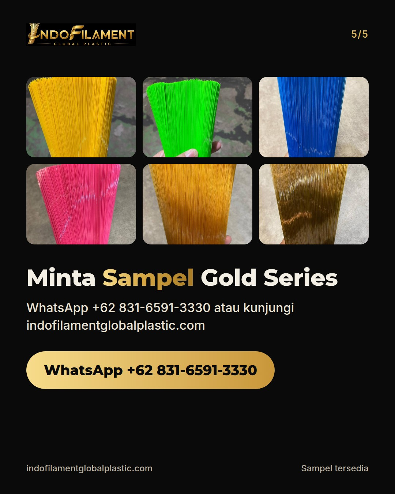

Gold Series: bulu sapu warna emas (Bright Gold & Copper Gold, finishing pearl) yang bikin produk naik kelas





Mau sapu produk Anda tampil beda di rak toko? ✨ Gold Series dari Indofilament hadir dengan dua pilihan warna emas: Bright Gold yang cerah berkilau dan Copper Gold yang hangat dan elegan, keduanya dengan finishing pearl yang memberi kesan premium. Dibuat dari filamen nilon dengan bahan baku plastik daur ulang yang ramah lingkungan, diproduksi di pabrik kami di Tangerang dengan mesin filamen modern berkapasitas hingga 5 ton per hari. Diameter, panjang, dan kekakuan bisa disesuaikan, dan tersedia juga untuk OEM dan private label. Cocok untuk pemilik merek sapu, distributor, maupun importir yang ingin menaikkan kelas produknya. Minta sampel via WhatsApp +62 831-6591-3330 atau DM kami. Pabrik juga terbuka untuk dikunjungi di Jl. Perancis No.79, Dadap, Tangerang. For export buyers: our Gold Series broom filament (Bright Gold & Copper Gold, pearl finish) is nylon filament made with recycled plastic raw materials. Samples available on request. #bulusapu #bulusikat #filamen #pabriksapu #madeinindonesia #goldseries #broomfilament #brushfilament #privatelabel #OEM #ramahlingkungan #Tangerang